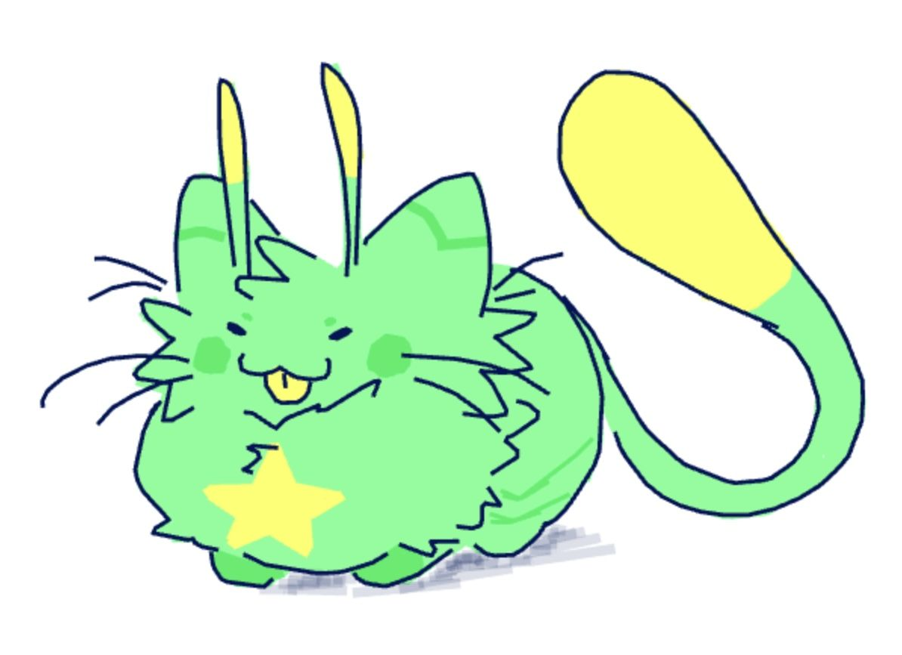
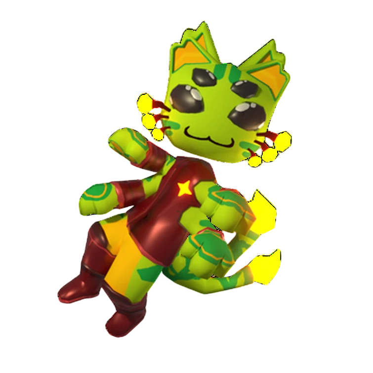
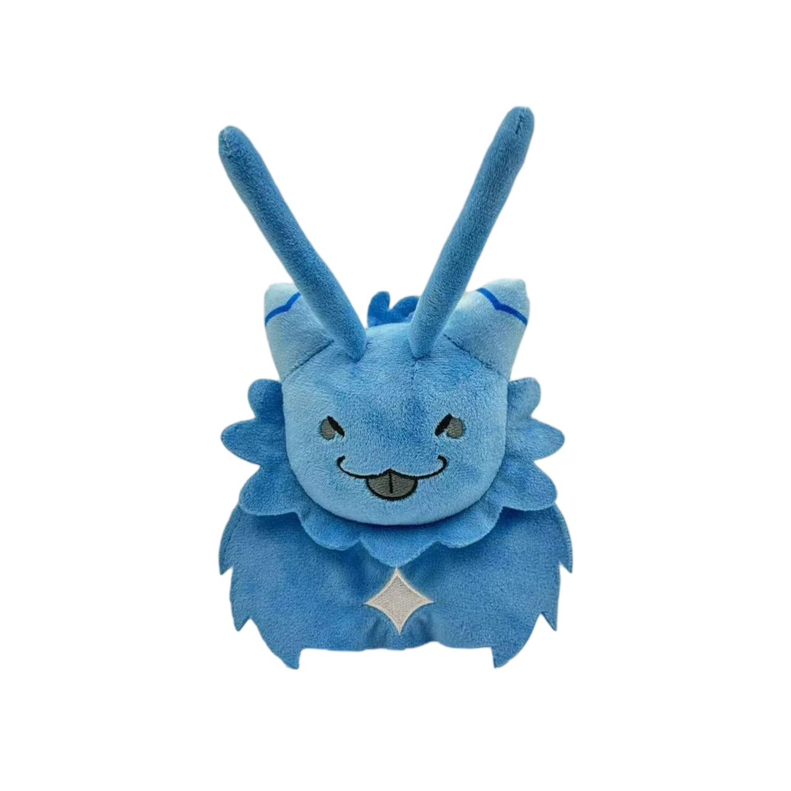
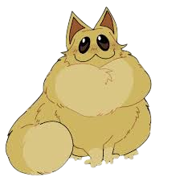
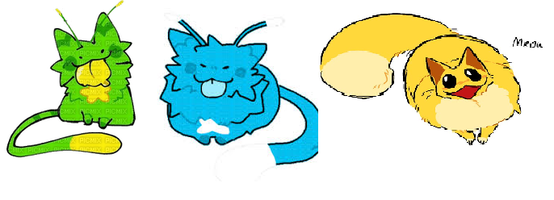

Información sobre los Gatoliens
Los tres tipos de Gatoliens mas conocidos
Gnarpys |
Floppus |
Blots |
Gnarpy |
Gunrpy |
Gmarpy |
Floppun |
Floppers |
Flomins |
Blotty |
Blorp |
Blopper |
|  |
 |
 |
 |
 |
 |
 |
 |
 |

¿Que son?
¿Que producen?
¿De donde vienen?
¿Que comen?
¿Nos quieren invadir?

Preguntas frecuentes sobre ellos
- ¿Que son?
- Los Gatoliens son gatos mutados geneticamente para poder resistir al espacio y de hay sale ese color tan diferente y peculiar suyo. Tienen un tipo diferente para el planeta en el que estes y dependiendo de
los componentes de ese planeta, como Gnarpy puede aguantar perfectamente los viajes supersonicos, la gravedad 0 y gases compuestos como el metano. En otro lado Floppun puede aguantar gravedades de hasta 5000 neowtons.
- ¿Que producen?
- Los Gatoliens producen un tipo de leche cosmica que tiene propiedades rejuvenecedoras, los Gatoliens aunque pueda sonar raro echan la leche de manera gaseosa, a simple vista no se ve. Pero despues de un tiempo se va notando.
Es un material muy caro que se usa en platos de mucho prestigio y no existe nadie en que sea alergico o intolerante a la leche.
- ¿De donde vienen?
- Son el unico servivo que muto dependiendo de las situaciones del planeta, antes cada planeta era como la tierra, pero el paso de los años los destruia, pero los gatos fueron los unicos animales en poder mutar y seguir vivos.
asi que vienen del espacio pero no son alies como tal, son solamente animales mutados para sobrevivir condiciones muy dificiles.
- ¿Que comen?
- Los Gatoliens comen piedras y respiran el tipo de gas que estaba en el planeta en el que vivian, como Gnarpy que come piedras de uranio y respira metano. por eso el material que producen es tan caro, su cuidado es muy
dificil y caro.
- ¿Nos quieren invadir?
- Estos gatos an perdido la capacidad de pensar para que el paso de los años no les afecte de ninguna manera, por lo que no pueden pensar en atacarnos o hacernos daño, son muy pasificos.

